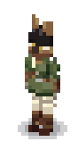
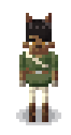
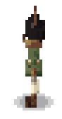
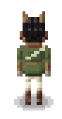
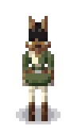
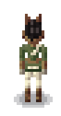
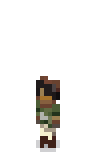
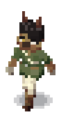

Beast-Touched
Human-like tribes who carry the fury of the wild in their blood and can call it up in a fight.
Human-like tribes who carry the fury of the wild in their blood and can call it up in a fight. Their clans each follow a great beast, and their hunters read the forest like a page. They are the Confederacy's scouts and its ambushers, and the Empire's border forts fear the night they come.
Classes
Class limits per race: TBD.
Gallery















